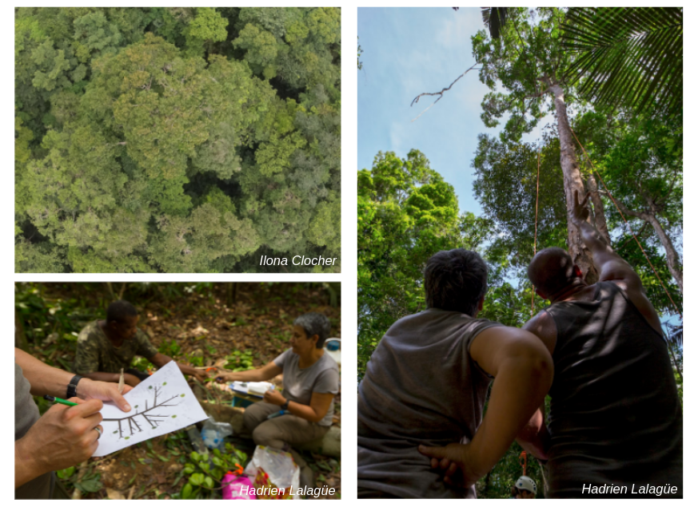
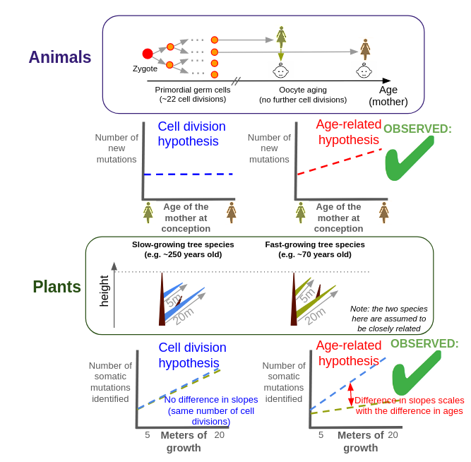
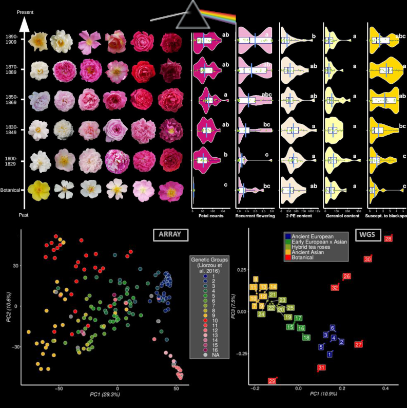
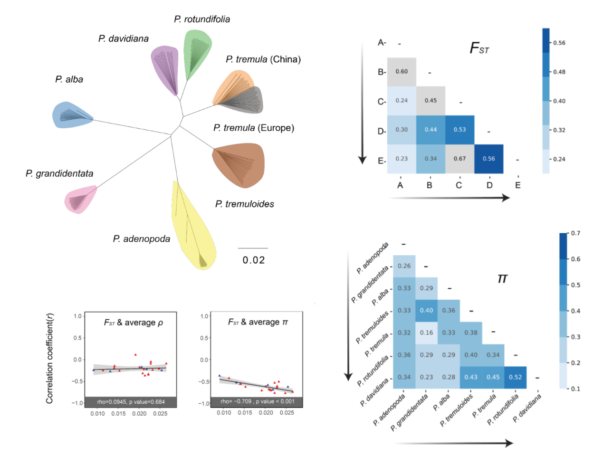

Thibault Leroy
Evolutionary biologist

In this study, we explored the origin of new heritable mutations in plants, a question that was less explored compared to animals. While most animals have an early segregation of the germline, plant germline is generally assume to segregate very late in development, with a segregation typically assumed to occur near flowering in angiosperms. Such a late segregation is expected to allow the transmission of accumulated somatic mutations to progeny. In this study, we resequenced DNA from branches differentially exposed to sunlight in two tropical tree species, Dicorynia guianensis and Sextonia rubra. Contrary to expectations, we neither found more mutations in more exposed branches, nor any UV-specific footprint (mutation spectra). In addition, reconstructed phylogenies based on the somatic mutations do not follow branching patterns. Our study however unrevealed a large number of mutations, most of them observed at very low frequency in tissues. Despite their low allele frequency, we found that they can be transmitted to the next generation. Overall, our study challenges some common assumptions about somatic mutations in plants, revealing that low-frequency mutations can be heritable, mutation phylogenies deviate from tree branching patterns, and mutation rates do not seem to be highly influenced by UV exposure. These findings provide new perspectives on heritable somatic mutations, emphasizing their crucial role in plant evolution and suggesting more intricate links between plant growth, aging, UV exposure, and mutation rates than previously thought.
More details: Schmitt et al. Low-frequency somatic mutations are heritable in tropical trees Dicorynia guianensis and Sextonia rubra PNAS 2024

In this mini-review, I highlight how conserved the mutational processes seem to be in animals and plants. In animals, the origin of mutations was initially assumed to occur predominantly due to DNA replication errors and therefore to accumulate linearly, as the product of the number of cell divisions and the mutation rate per cell division. Detailed investigations over the last decade have however shown that germline mutations accumulate with age, rather than with the number of cell divisions. As a parallel in plants, Satake and collaborators have recently sequenced and assembled the genomes of two hardwood species of the Dipterocarpaceae botanical family living in central Borneo, Indonesia. These two species have notable differences in growth rates, with Shorea leprosula growing more than three times faster than S. laevis. By investigating somatic mutations within the two tree species, they remarkably found considerable support for an accumulation of plant somatic mutations with absolute time, not with the number of cell division. Given the apparent conservation of the mutational processes in animals and plants, my overall message is that plant and animal research communities interested by mutation have much to gain from collaborating with one another in the future.
More details: Leroy. Plants: Re-evaluating the driving force behind mutations eLife 2023

In this preprint, we retraced the history of rose breeding during the 19th century, the golden age for roses in Europe! We indeed collected large phenotypic and genetic data from 200+ roses from an ancient collection and explored changes. Roses represent an ideal model to reconstruct the past history of breeding because they are reproduced through vegetative culture, allowing the maintenance of ancient varieties. This allows the genotyping and phenotyping of roses that were bred at different periods of time. We studied ~30 traits, including some presumably crucial for rose breeding: the duration of the blooming season, the color and number of petals and the floral scent (with volatile compounds quantified using a GC-mass spectrometry strategy). We have particularly studied wthe population structure, kinship and footprints of artificial selection, identifying genomic regions targeted by breeders. Finally, we performed a large GWA study considering both the genotypes and the phenotypes of the 200+ roses, generating the largest GWAS catalog for roses to date (roseGWASbrowser). Our main take home message is associated with the crucial importance of preserving botanical and ancient rose collections to safeguard diversity and ensure a sustainable breeding for the long-term. This requires an increasing effort, especially regarding state funding.
More details: Leroy et al. Dark side of the honeymoon: reconstructing the Asian x European rose breeding history through the lens of genomics BioRxiv 2023

Using a large population-based whole-genome sequencing effort (8 Populus species, >200 individuals in total), we investigated genomic landscapes of nucleotide diversity and divergence. Thanks to this multispecies sampling, we were able to investigate the genomic landscapes as progression through time considering all the species pairs along the Populus divergence gradient. We observed relatively conserved patterns of genomic divergence across the species pairs and found support for predominant signatures of linked selection, independently of the stage across the divergence gradient. Our results are also consistent with additional contribution of gene flow and standing genetic variation in shaping these genomic landscapes. Our study highlights the importance of investigating genomic patterns on multiple species across a divergence gradient to learn more about speciation processes. Remarkable work by Huiying Shang (PhD initially supervised by Christian Lexer, and then by Ovidiu Paun and I). The paper is dedicated to the memory of Christian.
More details: Shang et al. Drivers of genomic landscapes of differentiation across a Populus divergence gradient Molecular Ecology 2023
 I am a population geneticist, employed as permanent researcher (CRCN) at INRAE, Toulouse, France. My research is focused on the study of evolutionary forces: gene flow, drift, mutation and selection and their relative importance in divergence and speciation. My main model is honey bees but I continue to work on some other models through collaborations, including some models I studied over the last decade (plants: oaks, cereals, Populus, Bromeliads etc; animals: passerine birds, salmon etc). My interests also include genomics - in its broader sense - and statistical methods for population genetics.
I am a population geneticist, employed as permanent researcher (CRCN) at INRAE, Toulouse, France. My research is focused on the study of evolutionary forces: gene flow, drift, mutation and selection and their relative importance in divergence and speciation. My main model is honey bees but I continue to work on some other models through collaborations, including some models I studied over the last decade (plants: oaks, cereals, Populus, Bromeliads etc; animals: passerine birds, salmon etc). My interests also include genomics - in its broader sense - and statistical methods for population genetics.